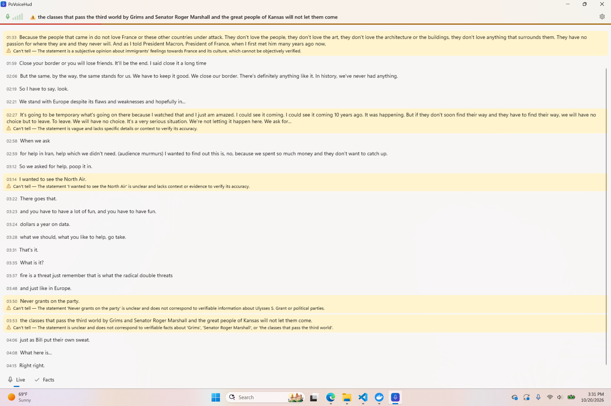
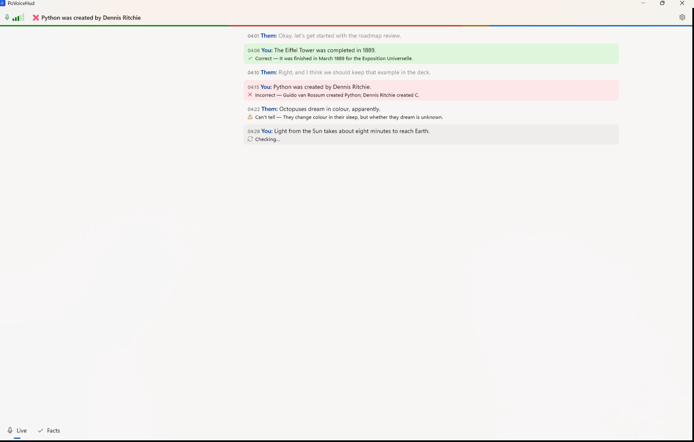

A quieter Live page
"Before" is the owner's screenshot of a live session (a speech played through the speakers), maximized. "After" is a Debug build with --demo, also maximized, captured with PrintWindow at 150 %.
Before

1 2 3- One verdict for five sentences. Whisper hands over everything said between two pauses as one line.
- Amber everywhere. Opinions ("they don't love the art"), garbled speech ("Never grants on the party") and fragments all came back as Can't tell, with a block of colour each.
- Lines run the full width of the screen, and chatter looks as important as claims.
After

1 2 3 4- Readable width: the lines stop at 900 px and centre in a wide window.
- Chatter is dimmed, so the claims stand out. Each sentence is its own line, and each claim gets its own verdict.
- Can't tell is a quiet note without a block of colour, and it no longer takes over the headline.
- The headline keeps the last real verdict, correct or incorrect.
The model, before and after the prompt change
The same sentences from the session, sent to gpt-4.1-mini with the new prompt (opinions, predictions, anecdotes, vague remarks and garbled speech count as "not a claim"):
| Sentence | Before | After |
|---|---|---|
| Because the people that came in do not love France… | Can't tell | not a claim |
| They have no passion for where they are and they never will. | (part of an amber line) | not a claim |
| It's going to be temporary what's going on there… | Can't tell | not a claim |
| I wanted to see the North Air. | Can't tell | not a claim |
| Never grants on the party. | Can't tell | not a claim |
| And as I told President Macron, President of France, when I first met him… | (part of a long line) | Can't tell (quiet note) |
| Roger Marshall is a United States senator from Kansas. | — | Correct |
| The Eiffel Tower was completed in 1889. | Correct | Correct |
| Python was created by Dennis Ritchie. | Incorrect | Incorrect |